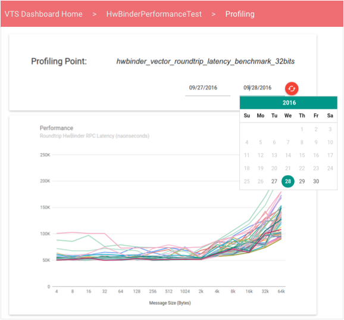
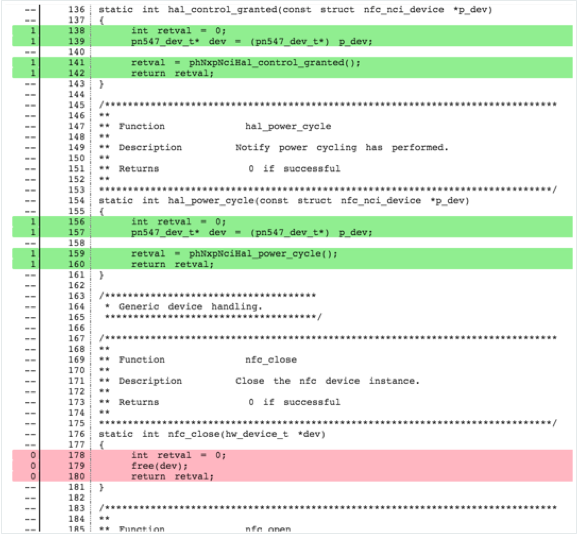

The VTS Dashboard provides a cohesive user interface that uses material design to effectively display information about test results, profiling, and coverage. Dashboard styling uses open-source Javascript libraries including Materialize CSS and jQueryUI to process data delivered by Java servlets in Google App Engine.
The Dashboard home page displays a list of test suites a user has added to favorites.
From this list, users can:
Test Results displays the latest information about the selected test suite, including a list of profiling points, a table of test case results in chronological order, and a pie chart displaying the result breakdown of the latest run (users can load older data by paging right).
Users can filter data using queries or by modifying the test type (pre-submit, post-submit, or both). Search queries support general tokens and field-specific qualifiers; supported search fields are: device build ID, branch, target name, device name, and test build ID. These are specified in the format: FIELD-ID="SEARCH QUERY". Quotes are used to treat multiple words as a single token to match with the data in the columns.
Users can select a profiling point to reach an interactive view of the quantitative data for that point in a line graph or histogram (examples below). By default, the view displays the latest information; users can use the date picker to load specific time windows.
Line graphs display data from a collection of unordered performance values, which can be useful when a test of performance produces a vector of performance values that vary as a function of another variable (e.g., throughput versus message size).
Users can view coverage information from the coverage percent link in test
results.
For each test case and source file, users can view an expandable element containing color-coded source code according to the coverage provided by the selected test:
Coverage information is grouped depending into sections depending on how it was provided at run-time. Tests may upload coverage:
The Dashboard fetches source code client-side from a server, which uses the open-source Gerrit REST API.
The VTS Dashboard provides the following monitors and unit tests.